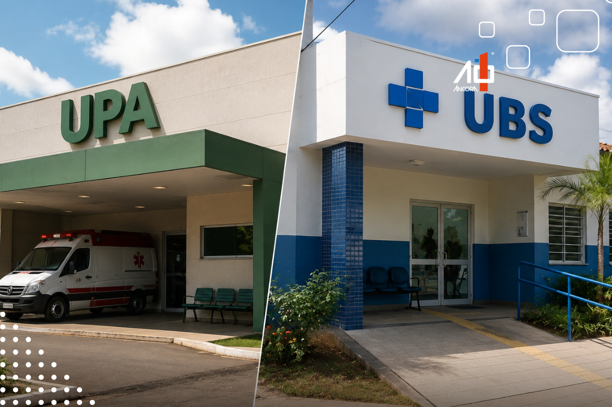

Quando procurar a UBS ou a UPA
Saber qual serviço de saúde buscar no momento certo ajuda você a receber o cuidado adequado e contribui para um atendimento mais ágil para todos.

Quando procurar a UBS
A Unidade Básica de Saúde (UBS) é a porta de entrada preferencial do SUS. Procure a UBS para consultas de rotina, acompanhamento de condições como diabetes e hipertensão, vacinação, pré-natal, prevenção, renovação de receitas, exames de acompanhamento e orientações de saúde. É o local ideal para cuidar da sua saúde de forma contínua, antes que os problemas se agravem.
Quando procurar a UPA
A Unidade de Pronto Atendimento (UPA) funciona 24 horas e é indicada para casos de urgência que precisam de atendimento rápido, mas que não representam risco imediato de morte. Exemplos incluem febre alta persistente, crises de pressão, dores intensas, cortes que precisam de sutura, fraturas simples, vômitos ou diarreia com sinais de desidratação e crises de asma. Em emergências graves, como falta de ar intensa, dor no peito, suspeita de AVC ou acidentes graves, ligue imediatamente para o SAMU pelo número 192.